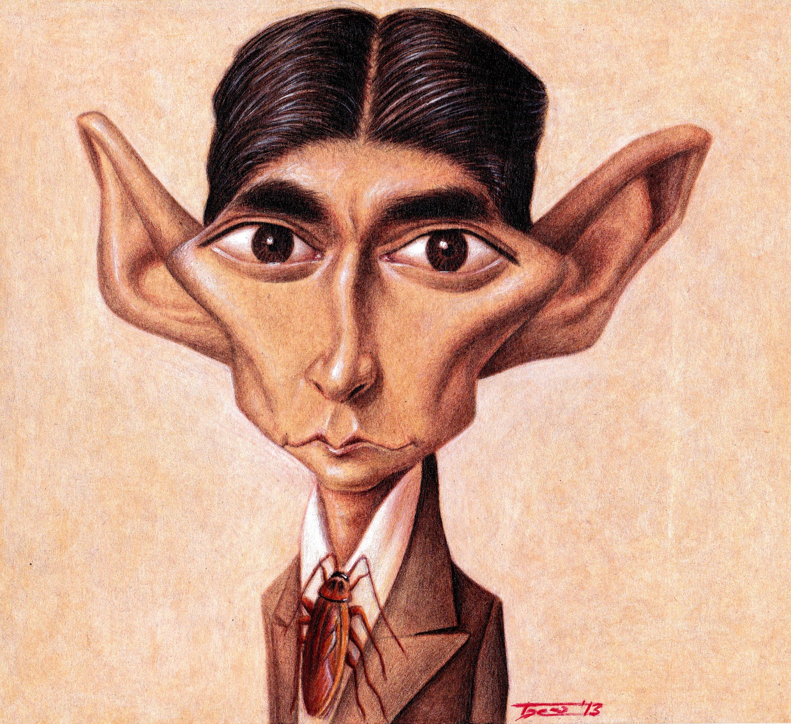

Existen métodos insuficientes, casi pueriles, que también pueden servir para la salvación. He aquí la prueba:
Para protegerse del canto de las sirenas, Ulises tapó sus oídos con cera y se hizo encadenar al mástil de la nave. Aunque todo el mundo sabía que este recurso era ineficaz, muchos navegantes podían haber hecho lo mismo, excepto aquellos que eran atraídos por las sirenas ya desde lejos. El canto de las sirenas lo traspasaba todo, la pasión de los seducidos habría hecho saltar prisiones más fuertes que mástiles y cadenas. Ulises no pensó en eso, si bien quizá alguna vez, algo había llegado a sus oídos. Se confió por completo en aquel puñado de cera y en el manojo de cadenas. Contento con sus pequeñas estratagemas, navegó en pos de las sirenas con alegría inocente.
Sin embargo, las sirenas poseen un arma mucho más terrible que el canto: su silencio. No sucedió en realidad, pero es probable que alguien se hubiera salvado alguna vez de sus cantos, aunque nunca de su silencio. Ningún sentimiento terreno puede equipararse a la vanidad de haberlas vencido mediante las propias fuerzas.
En efecto, las terribles seductoras no cantaron cuando pasó Ulises; tal vez porque creyeron que a aquel enemigo sólo podía herirlo el silencio, tal vez porque el espectáculo de felicidad en el rostro de Ulises, quien sólo pensaba en ceras y cadenas, les hizo olvidar toda canción.
Ulises (para expresarlo de alguna manera) no oyó el silencio. Estaba convencido de que ellas cantaban y que sólo él estaba a salvo. Fugazmente, vio primero las curvas de sus cuellos, la respiración profunda, los ojos llenos de lágrimas, los labios entreabiertos. Creía que todo era parte de la melodía que fluía sorda en torno de él. El espectáculo comenzó a desvanecerse pronto; las sirenas se esfumaron de su horizonte personal, y precisamente cuando se hallaba más próximo, ya no supo más acerca de ellas.
Y ellas, más hermosas que nunca, se estiraban, se contoneaban. Desplegaban sus húmedas cabelleras al viento, abrían sus garras acariciando la roca. Ya no pretendían seducir, tan sólo querían atrapar por un momento más el fulgor de los grandes ojos de Ulises.
Si las sirenas hubieran tenido conciencia, habrían desaparecido aquel día. Pero ellas permanecieron y Ulises escapó.
La tradición añade un comentario a la historia. Se dice que Ulises era tan astuto, tan ladino, que incluso los dioses del destino eran incapaces de penetrar en su fuero interno. Por más que esto sea inconcebible para la mente humana, tal vez Ulises supo del silencio de las sirenas y tan sólo representó tamaña farsa para ellas y para los dioses, en cierta manera a modo de escudo.